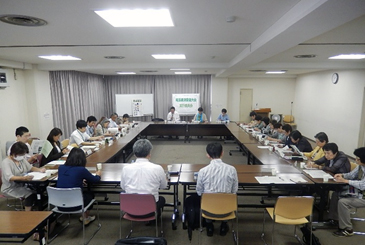

|
|
第52回埼玉県消費者大会実行委員会 7月21日(木)13時30分より、さいたま市民会館うらわ705・706会議室にて第4回実行委員会が開催され、25人(17団体)事務局2人が出席しました。 【議題】  1．第3回実行委員会報告(修正・追加の確認を含む) 事務局より、第3回実行委員会報告と検討スケジュール報告し、確認しました。 2．基調となる情勢と埼玉県の状況について 第3回実行委員会での基調となる情勢に加筆修正した文章、第3回実行委員会を受けたFAXによる意見集約を受けて話し合いました。話し合いを受けて修正した文章を次回実行委員会で確認し、確定することになりました。 3．大会アピールについて 前回までの基調となる情勢、埼玉県の課題の話し合いを受けて、事務局で作成した文章をもとに、今大会のアピールについて意見交換を行いました。今回の意見交換の内容を反映し、次回実行委員会で確定することになりました。 4．大会当日の役割や活動紹介の展示方法について 第3回実行委員会で確認した事項を加筆した文章をもとに、司会・アピール提案などの役割分担、オープニング行事、ロビーでの各団体の活動紹介のパネル展示について話し合い、次のことを確認しました。
5．分科会について 第3回実行委員会での分科会の話し合いをまとめた文章で進捗を全体で確認したあと、映画・社会保障・食・消費者課題の4つのテーマにわかれて話し合いました。 6．お知らせ 日本消費者協会が行っている葬儀に関するアンケート調査への協力を各団体に呼びかけ、実施しました。分科会の話し合いのあとに記入・提出をいただきました。 |